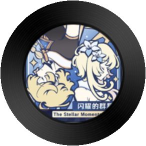
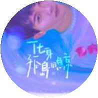
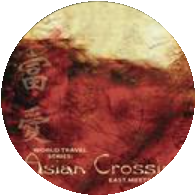
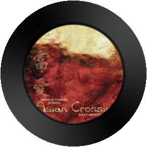
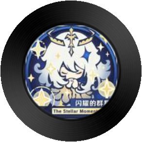
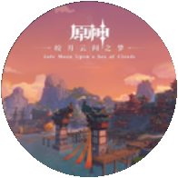
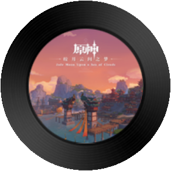
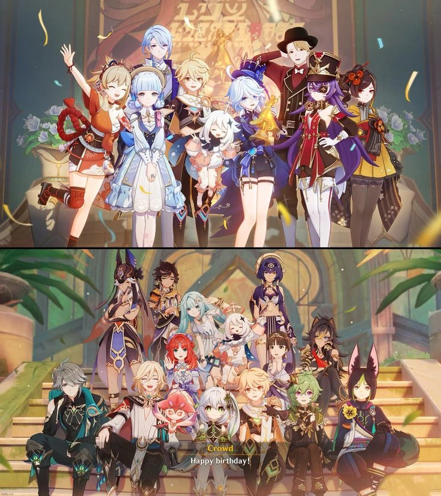
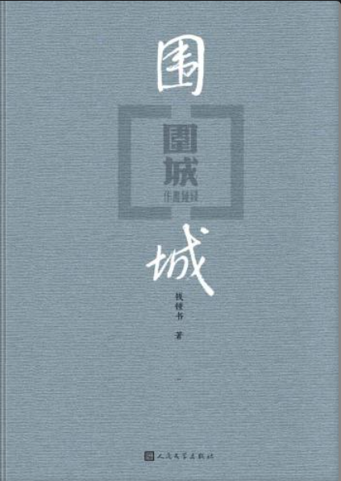

SIDE A
VOCAL COMPANION
ZS-2026 // NO.01
周深
Healing Vocals
空灵人声与治愈长夜
“合肥晚自习回寝的路上，那些抚平浮躁的声波。”
- 01
- 02
- 03
- 04
- 05
在合工大的日常图纸与专业课程之外，这里是我留给自己的安静角落。
在这份长长的主题手账里，收拢着我珍藏的旋律、游戏世界、文字沉淀与生活胶片。
欢迎你慢慢翻阅，愿在此间，能找到与你相似的共鸣。
那些陪我走过某个夏天的歌。

像夏天傍晚突然吹过来的一阵风，心浮气躁的时候放它总能静下来。

不是最热闹的一首，但在海边一个人看落日和独自走路时很踏实。


适合在房间里画图做三维建模累了的时候循环，像阳光切过百叶窗的跳动。

大二深夜攻坚机械原理与备战竞赛时的热血伴奏，按下播放键就有继续冲刺的力气。


和好友在秋天林道上骑单车的那趟短途出行，微风拂过衣角，阳光正好。
“合肥晚自习回寝的路上，那些抚平浮躁的声波。”
“戴上耳机的瞬间，便再次踏入无垠的奇幻世界。”
“游戏不仅是消遣，更是我们穿梭不同平行宇宙、经历奇迹与冒险的第二人生。”

我是在 4.0 枫丹版本踏入这片大陆的。那时尚未接触端游的浩瀚，手机里的消遣翻来覆去不过寥寥几款，出于对满网议论的好奇，我想探寻这里究竟藏着怎样的天地。初入提瓦特最难忘的，是总有高等级玩家抢着申请进门带萌新，起初我还以为带人会有丰厚的叠加悬赏，后来才懂得，原来世间真有不图回报的热忱与善意。
手机画质有限，但我对剧情有近乎偏执的珍重：凡是有配音的魔神主线，我宁可悉数压在任务栏里攒着，也绝不肯在低画质与卡顿里草草消耗初见的震撼。那时平日奔波、闲暇极少，难得的空隙里，我只想买一份真正舒展透亮的视听享受。为了看清枫丹水下那一泓毫无瑕疵的波光，我自费续费了云原神时长，也成了我人生中第一笔真正的大额充值 💸。
探索至今，原神音乐成了我最深的日常寄托。上方的歌单只是常听的零碎拾遗，而在 B站年度报告里循环登顶、陪伴我最久的，始终是《纳塔交响音乐现场》。没有故作高深的由头，只因那版交响里喷薄而出的炽热与生命力，恰是当时我（我们）最渴望借来前行的力量。留下这串 UID，不问练度，只记录一段被音符与善意温暖过的真实岁月。
不是为了成仙作祖，而是在漫天神佛与命运面前，认出真实的自己。
“若不是大学里兄弟领进门，我大概真要错过这片真正属于我们自己的苍茫古刹。”
曾浅尝过《法环》，但异域语言与神话的隔阂终究未解其味。直到大学时光里，被最好的兄弟拉进黑神话的世界——推开殿门的那一刻，我第一次亲眼见识到何为真正属于我们自己的国产 3A 巅峰。
行于山野古道与残阳风烟之间，漫天神佛威压而下，帧帧如画。每一次过剧情都是毫无妥协的院线级视听洗礼。沉迷在这片东方神话奇景中，往往回过神来窗外已不知东方之既白。
踏入这场西行，不仅是通关一款游戏，更像与老友共赴的一场旷日梦境。破妄
“数不清倒在强悍妖王脚下多少回，但千百次折戟换来的一记‘识破’，胜过所有虚幻的掌声。”
动作魂游的纯正快感，从来伴随着结结实实的受苦。面对强悍妖王，在一次次抓狂、倒地与重开中摸索招式与出刀时机；当千百次翻滚化作破空的势如雷霆，那一刻见招拆招的成就感无可替代。
体验、沉浸、受苦、享受。重走这趟西行路，求的从不是封神成圣，而是在漫天神佛与莫测宿命面前，依然能挺直脊梁直面天命的骨气。感谢西行，更感谢同行之人。
长棍在手，前路纵有万重险关，踏平坎坷终成大道。天命
偏好劈棍与立棍。在毫无容错的毫厘闪避与金铁刀鸣间，体会到极致的见招拆招；每一次成功识破化解妖王重击，都是心流与专注的瞬间释放。
难忘黄风漫天、大漠狂风与妖王压迫下的数百次折戟倒地。面对强敌没有捷径，在一遍遍重开中摸透出招节拍，死磕到底，方得破局。
重走西游路，所求从来不是成仙作祖，而是在漫天神佛威压与莫测命运面前，挺直脊梁直面天命。见天地，见众生，亦见真实的自己。
“在字里行间里照见自己，文字是抵御喧嚣最安静的力量。”

“城里的人想出去，城外的人想冲进来。”
围在城里的人想冲出来，城外的人想冲进去。对婚姻也罢，职业也罢，人生的愿望大都如此。
年少看方鸿渐觉得滑稽可笑，如今看却满是普通人无法逃脱的狼狈与犹疑。生活里的“围城”何止婚姻？那些未曾抵达的远方总是最好的，直到我们真正置身其中。
刻薄背后藏着对人性的极致体察。承认自己的平庸与局限，大概是与生活握手言和的第一步。
沿着照片的轨道，慢慢回看。
热爱是平淡生活里的一束光，提醒我们除了日常的繁杂，世界还有无限广阔的可爱之处。
如果你也曾为提瓦特的一阵晚风驻足、在西行路上直面过天命，或者刚好喜欢同一种旋律——
欢迎前往我的纸条信箱，留下一张属于你的便签，我们交流分享！
前往纸条信箱留下一张便签 ➔阳光穿过树梢落下的斑驳光点